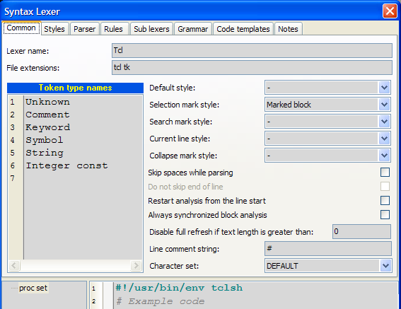

Lexer configuration dialog
This dialog is used for to customize lexer. It includes:
- Common properties
- Text styles
- Token rules
- Block rules
- Sublexer rules
- Code templates
- Sample text

Button commands
- Export - Opens dialog to save lexer configuration to file (*.LCF).
- Import - Opens dialog to load lexer configuration from file (*.LCF).
- Apply - Applies changes without dialog closing.
- OK - Applies changes.
- Cancel - Cancels changes.
Preview text
At the bottom of the dialog editor the sample code is placed. Any change of lexer configuration effects on the sample code. This preview text is also used in the "Customize lexer styles" dialog that is intended to change only styles.
Common page
- Lexer name - name of the lexer. Usually it is a name of file format/language.
- File extensions - list of file extensions to autodetect lexer.
- Token type names - are associated with the integer value (line number). They are used to simplify token type assignment to the token rules and selecting a set of token types for conditions of block rules. Token type is integer value in the range 0..31.
- Default style - default style which first is applied to the editor canvas. If default style is not specified, default font and color properties are used.
- Selection mark style - style for selected block in the syntax memo. If no style is selected to draw selection in the editor default foreground and background are used.
- Search mark style - style to mark out search results in the syntax memo. If no style is selected to draw search results in the editor default foreground and background are used.
- Current line style - style that is used to draw current line (line with the caret). If you don't want highlight current line select style type "Only Background" and color of background "None".
- Skip spaces while parsing - checkbox specifies how to process space characters (space, tab, CR, LF, FF). If it is checked all space characters will be skipped before token rules checking, otherwise they will not be skipped.
- Do not skip end of line - specifies whether line breaks should be parsed.
- Restart analysis from line start - if it is ON, parser results are cleared starting from start of line where text was changed, otherwise they are cleared after position of text changing.
- Always synchronized block analysis - specifies whether block analysis should be always performed with text parsing, otherwise analyzer tries to perform block analysis after whole text was parsed.
- Disable full refresh if text size is greater - specifies threshold after which full refresh (when text is changed) of sytactical obects will not be performed. If this value is 0 (by default), full refreshing is disabled. Full refreshing takes more time, but sometimes it may be useful for some parser's rules (for example, parser expression ".*" will not work correctly without full refresh).